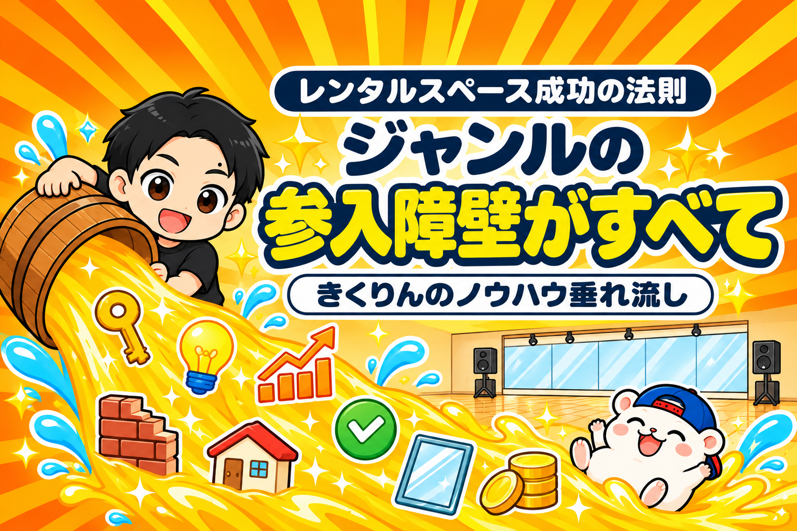

レンタルスペースで成功するかどうかは、ジャンルを選んだ時点で、ほぼ決まっています。
人を雇わなくていい。
物件は、ワンルームマンションでもいい。
集客は、ポータルサイトに載せればできる。
レンタルスペースは、それくらい始めやすい商売です。
でも、それはあなただけでなく、ほかのだれにとっても同じです。
だれでも始められる商売で、差がつく所は1つしかありません。
それが、ジャンルの参入障壁です。
参入障壁とは、始めるときのハードルのこと。
レンタルスペースなら、この3つです。
- 物件のハードル(貸してくれる物件が見つかりにくい)
- お金のハードル(家賃と初期費用が高い)
- 気持ちのハードル(「この家賃で大丈夫かな」とこわくなる)
ハードルが低いジャンルは、すぐにまねされて部屋が増え、利益が削られていきます。
ハードルが高いジャンルは、部屋が増えにくく、長く稼げます。
だから、ジャンルの参入障壁がすべて。
これが、23店舗を出してきて分かった、レンタルスペース成功の法則です。
この記事を書いた人

この記事は、23店舗のうち11店舗を、物件の見つかりにくいダンスのレンタルスタジオで出してきたきくりんが書いています。
多くの部屋を1年前後で回収し、早い部屋は7か月でした。
レンタルスペースは、ジャンル以外の参入障壁がほとんどない
| 参入障壁 | レンタルスペースでは |
|---|---|
| 人 | 採用も、社員も、アルバイトもいらない |
| お金 | 小さい部屋なら、初期投資が少なくてすむ |
| 物件 | ワンルームマンションでも始められる |
| 集客 | ポータルサイトに載せればできる |
| 働き方 | 会社員の副業でもできる |
ふつうのお店を始めるなら、人を雇い、お金を集め、お客さんを集める必要があります。
どれも高い壁です。
レンタルスペースは、その壁がほとんどありません。
ほかの商売と比べると、極端に低いです。
- 人がいらない(採用も、社員も、アルバイトもいらない)
- 初期投資が少なくてすむ(小さい部屋なら)
- 物件は、ワンルームマンションでも始められる
- 集客は、ポータルサイトに載せればできる
- 会社員の副業でもできる
始める人にとっては、とてもありがたいことです。
でも、ほかの人にとっても、同じようにありがたい。
人を集める力も、お金の力も、集客の力も、差になりません。
ほかの商売なら武器になるものが、レンタルスペースでは武器にならない。
だから、ジャンルで勝負するしかないんです。
はじめての人ほど、始めやすいジャンルを選びがち
レンタルスペースを始めようとする人は、まず試しに、やりやすいものを出しがちです。
例えば、こんなジャンルです。
- 小箱のパーティースペース
- 小箱の貸し会議室
- 推し活用・姫系の撮影スタジオ
共通しているのは、出しやすいこと。
物件が見つかりやすい。
ポータルサイトで人気の部屋を見たり、実際に自分で借りて使ってみたりすれば、作り方がすぐに分かる。
まねしようと思えば、だれでもまねできます。
「はじめてだから、小さく、かんたんに」。
その気持ちは、とても自然です。
ただ、同じことを考える人が、ほかにもたくさんいます。
ジャンルごとの特徴と向いている人は、始め方の記事のSTEP1で比べました。
そこに、もう1つ足してほしい軸が、参入障壁です。
▼レンタルスペースの始め方【令和8年11月最新版】

始めやすいジャンルは、あとから崩れる
始めやすいジャンルでは、時間がたつほど、こうなります。
- 競合の部屋が増える
- 1部屋あたりの予約が減り、売上が下がる
- 売上が下がり、利益が減る
- 利益が減り、初期投資の回収が遅れる
需要がどんどん伸びているジャンルなら、部屋が増えても耐えられます。
でも、需要より部屋の増え方のほうが速ければ、1部屋あたりの取り分は減っていきます。
こわいのは、出す前の収支シミュレーションでは、順調な数字が出ることです。
シミュレーションは、出した日の競合の数で計算します。
そのあとに出てくる競合の部屋は、入っていません。
だから、出したときは黒字の計算でも、競合が増えるにつれて利益がなくなり、回収できないまま、ということが起きます。
例えば、新宿のワンルームマンションで、小箱のパーティースペースを始めるとします。
- いま、近くに競合はどれだけいるか
- これから、新しく始める人はどれだけ増えそうか
- その中で、何年も利益を出し続けられるか
はじめは、新しい店の目新しさで、予約が入るかもしれません。
とがったコンセプトで、いったんは利益が出るかもしれません。
でも、すぐに新しい部屋が出てきます。
はやればはやるほど、まねされる。
いたちごっこです。
ニーズがあっても、みんなができることで、利益は出続けません。
部屋が増えやすいジャンルの見分け方は、こちらの記事にまとめています。
▼レンタルスペース経営はオワコン？

参入障壁が高いジャンルは、この2つ
| ジャンル | ハードル | 部屋が増えにくい理由 |
|---|---|---|
| ダンスのレンタルスタジオ | 物件 | 音と振動で、大家さんが貸したがらない |
| 大箱のスペース | お金・気持ち | 家賃と初期費用が高く、こわくなる |
では、参入障壁が高いジャンルは何か。
代表は、この2つです。
ダンスのレンタルスタジオ → 物件のハードル
ダンスのレンタルスタジオは、とにかく物件が見つかりません。
もし、あなたが大家さんだとして、「ここでダンススタジオをやりたい」と言われたら、どうでしょう。
音や振動が心配で、あまり貸したくないと思いますよね。
多くの大家さんが、同じように考えます。
だから、物件が見つかりにくい。
物件が見つかりにくいから、部屋が増えにくいんです。
音と振動の問題がない物件さえ見つかれば、ライバルが増えにくいジャンルです。
ダンスのレンタルスタジオの物件の見つけ方は、1冊の教材にまとめています。
ぼくが出してきたダンスのレンタルスタジオ11店舗の実録と、毎日使っている物件探しのツールつきです。
第0部は、まるごと無料で読めます。
▼『【きくりん式】レンタルスペースは「ダンススタジオ」で稼ぐ！完全ロードマップ』

販売価格は3部売れるごとに3,000円ずつ値上がりします（上限あり）。内容・最新価格は販売ページをご確認ください。
大箱のスペース → お金と気持ちのハードル
もう1つは、大箱(広い部屋)のスペースです。
坪単価にもよりますが、広いぶん、家賃は高くなります。
内装や家具・備品も多くなり、初期費用もかかりがちです。
「この家賃で、本当に埋まるのかな」。
そう思って、多くの人が踏みとどまります。
その「こわさ」が、気持ちのハードルです。
始め方の記事では、「最初から大きい部屋は、おすすめしません」と書きました。
広さに見合う手残りを先に計算できないと、そのまま回収できない部屋になるからです。
逆に言えば、計算が合うと確かめられた大箱は、そのこわさに守られます。
「こわい」と感じる壁が、あなたの部屋を守る
物件のハードル。
お金のハードル。
気持ちのハードル。
どれも、始めるときには、できれば避けたいものです。
でも、あなたが避けたいハードルは、ほかの人も避けたいハードルです。
越える人が少ないから、部屋が増えにくい。
部屋が増えにくいから、長い目で見て稼ぎやすく、結果として回収も早くなりやすい。
ほかの人ができないこと、やりたがらないこと、敬遠しがちなことをやる。
ただし、ニーズがあることが前提です。
お客さんがいない所に壁を越えて出しても、絵空事で終わります。
例えば、ぼくが23店舗を出してきて言えるのは、一見リスクが高い部屋ほど、回収も早く、利益も安定して続くということです。
ぼくの部屋だけでなく、ほかの運営者を見ていても同じです。
車を買うときと、よく似ています。
レクサスやランドクルーザーは、買うときの値段が高い。
でも、手放すときにも高く売れるので、結局はそのほうが得だったりします。
レンタルスペースも同じです。
はじめのお金やこわさは大きくても、競合が増えにくいぶん、出したあとも稼ぎ続けられる。
見るべきは、出す日のハードルの高さではなく、出したあと何年かでいくら利益が出るかです。
始めやすさは、出す日だけの味方です。
参入障壁は、出したあと何年も、あなたの部屋を守ってくれます。
まとめ
レンタルスペース成功の法則は、「ジャンルの参入障壁がすべて」。
これからレンタルスペースを出すなら、ジャンルは参入障壁の高さで選んでください。
理由は、この3つでした。
- レンタルスペースは、ジャンル以外の参入障壁がほとんどない
- 始めやすいジャンルはまねされ、出す前のシミュレーションが崩れる
- ニーズがあって、ほかの人が敬遠するジャンルほど、長く稼げる
始めやすいジャンルの例は、小箱のパーティースペース・小箱の貸し会議室・推し活用の撮影スタジオ。
参入障壁が高いジャンルの例は、ダンスのレンタルスタジオと大箱のスペースです。
あなたが出そうとしているジャンル、ほかの人も、明日すぐに出せるジャンルではありませんか?
ジャンル選びから物件探し、出店、撤退まで。23店舗の数字といっしょに、教科書にぜんぶ書いています。
レンタルスペース経営の教科書

販売価格は3部売れるごとに2,000円ずつ値上がりします（上限あり）。内容・最新価格は販売ページをご確認ください。
▼もう1つの副業、AI社員だけのeBay輸出店の実録🐹

▼ブログ(レンスペ×eBay、全記事まとめ)